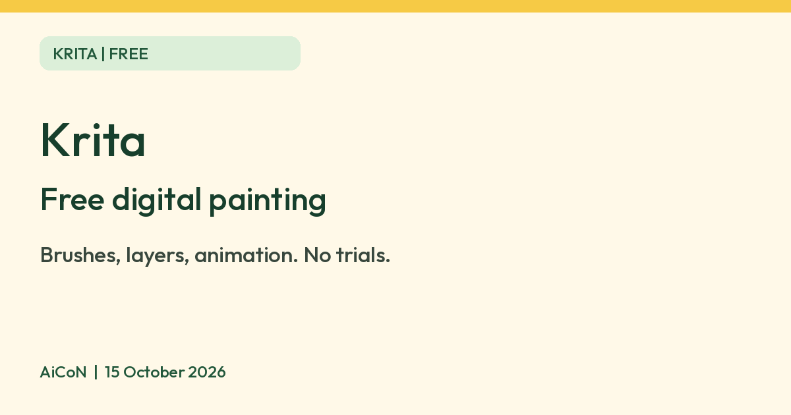

Krita: free digital painting and drawing software
Krita says it is free, open source painting software with no trials and no subscriptions, with brushes, layers and 2D animation tools.

What it is
Krita is a free digital painting and drawing program. Its site calls it "Digital Painting. Creative Freedom." and says it offers brushes, layers, drawing assistants and 2D animation tools. It is made by the Krita community and is used by illustrators, comic artists and hobbyists. It is not an AI tool. We included it as a free, official creative app for anyone who wants to draw on a computer, ideally with a drawing tablet or pen.
Is it free?
Yes. Krita's features page says "No trials. No subscriptions." and "Krita is, and will always be, free software". Its licence page says you may use it for any purpose, including commercial work, and that what you create with Krita is your own property. One catch: Krita is also sold in some app stores such as the Microsoft Store, and Krita's download page says those paid store versions give automatic updates and the money supports development. The free version is on krita.org.
What it does
- Painting: over 100 preloaded brushes, 9 brush engines, layers and brush stabilizers, per the features page.
- Vector and text tools for comic panels and speech bubbles.
- 2D animation: a timeline with onion skinning, audio support and export to video or images.
- Wrap-around mode for seamless textures and patterns.
- Resources: brush and texture packs you can import.
How to get it
- Computers: the download page lists Windows 8.1 or higher, macOS 10.15 or higher, and Linux. The page shows version 5.3.4.1, released 7 October 2026.
- Hardware: Krita lists 4 GB RAM as a minimum and 16 GB as recommended, plus OpenGL 3.0 or Direct3D 11 graphics. Any graphics tablet that works with your system is supported.
- Android: Krita's 5.3.4 release notes say Krita on Android is "still beta; tablets only".
What to watch out for
- It is a big program with a learning curve. A pen tablet helps a lot, though you can use a mouse.
- Older or low-memory laptops may struggle, given the RAM guidance above.
- On Android, the app can offer optional paid supporter packs for extra brush bundles, per Krita's release notes. The app itself is not what we checked for price in the Play Store.
Privacy and data
- Krita's privacy statement says Krita "does not access, collect, use, share or transmit any personal information or user data whatsoever".
- It lists two network uses: the optional news feed, and the G'Mic plugin, which can fetch filter definitions.
- It says you can choose to save author information in your images, but this is not on by default.
India
- Krita's pages do not restrict by country. We did not test the download from India.
Frequently asked questions
Is Krita free?
Yes. Krita says no trials and no subscriptions. Paid store editions exist, but the krita.org download is free.
Can I use my art commercially?
Krita's licence page says what you create is your property.
Does it work on a phone?
Krita says its Android version is beta and for tablets only.
Sources: Krita home, Features, Download, Licence, Privacy statement, Krita 5.3.4 release notes, Krita 5.3.3 release notes. Checked 15 October 2026.
No Krita logo is used in this article. Independent guide, not affiliated.